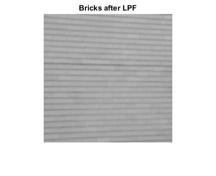
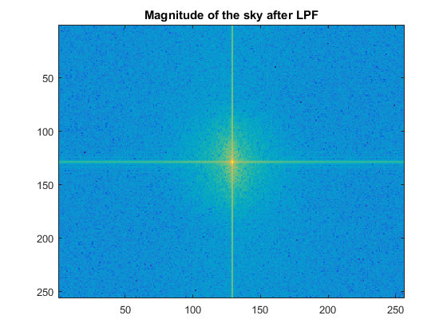
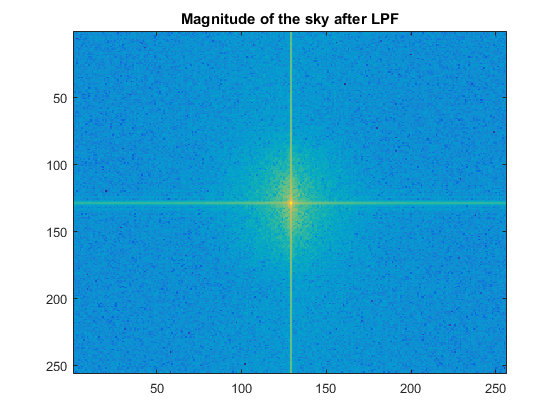

Lab 3
Contents
clear all; close all; clc;
Spatial Frequencies 1
Loading in and Resizing the images
bricks = imread('bricks.jpg'); sky = imread('sky.jpg'); bricks_256 = imresize(bricks, [256 256]); sky_256 = imresize(sky, [256 256]);
Displaying the Fourier Transform of the bricks and the sky
figure; imshow(bricks_256) bricks_gray = rgb2gray(bricks_256); figure; imagesc(log(abs(fftshift(fft2(bricks_gray))))) figure; imshow(sky_256) sky_gray = rgb2gray(sky_256); figure; imagesc(log(abs(fftshift(fft2(sky_gray)))))


Applying a low pass filter to the bricks yields the following
lpf = fspecial('gaussian',5,1.7); hpf = [0 0 0 0 0; 0 0 0 0 0; 0 0 1 0 0; 0 0 0 0 0; 0 0 0 0 0] - lpf; bricks_lpf = imfilter(bricks_gray, lpf, 'replicate'); bricks_hpf = imfilter(bricks_gray, hpf, 'replicate'); figure; imshow(uint8(bricks_lpf)) title('Bricks after LPF'); figure; imagesc(log(abs(fftshift(fft2(bricks_lpf))))) title('Magnitude of the bricks after LPF'); figure; imagesc(angle(fftshift(fft2(bricks_lpf)))) title('Phase of the bricks after LPF'); figure; imshow(uint8(bricks_hpf)) title('Bricks after HPF'); figure; imagesc(log(abs(fftshift(fft2(bricks_hpf))))) title('Magnitude of the bricks after HPF'); figure; imagesc(angle(fftshift(fft2(bricks_hpf)))) title('Phase of the bricks after HPF');


The energy for the high pass and low pass are given by:
energy_lpf = norm(fft2(bricks_lpf),2);
energy_hpf = norm(fft2(bricks_hpf),2);
fprintf('Bricks Energy HPF = %d, LPF Energy = %d\n', energy_hpf, energy_lpf);
Bricks Energy HPF = 2.691808e+05, LPF Energy = 1.083897e+07
Doing the same to the sky image yields the following:
sky_lpf = imfilter(sky_gray, lpf, 'replicate'); sky_hpf = imfilter(sky_gray, hpf, 'replicate'); figure; imshow(uint8(sky_lpf)) title('Sky after LPF'); figure; imagesc(log(abs(fftshift(fft2(sky_lpf))))) title('Magnitude of the sky after LPF'); figure; imagesc(angle(fftshift(fft2(sky_lpf)))) title('Phase of the sky after LPF'); figure; imshow(uint8(sky_hpf)) title('Sky after HPF'); figure; imagesc(log(abs(fftshift(fft2(sky_hpf))))) title('Magnitude of the sky after HPF'); figure; imagesc(angle(fftshift(fft2(sky_hpf)))) title('Phase of the sky after HPF');
 
 
The energy for the high pass and low pass are given by:
energy_lpf = norm(fft2(sky_lpf),2);
energy_hpf = norm(fft2(sky_hpf),2);
fprintf('Sky Energy HPF = %d, LPF Energy = %d\n', energy_hpf, energy_lpf);
Sky Energy HPF = 1.646941e+04, LPF Energy = 8.817600e+06